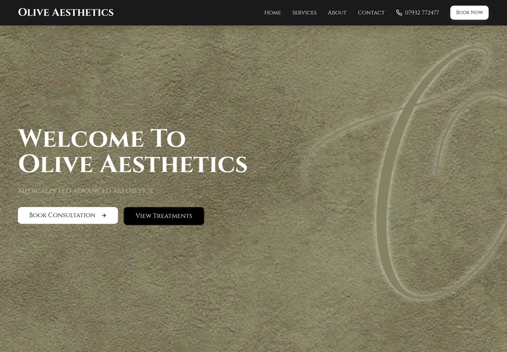

Portfolio composition studiesjack coatesWork About ContactA / SIGNAL OBSERVATORY
Developer & cyber security studentBuild.
Break.
Make it better.
Production web apps. Security tooling. A homelab that keeps me learning.
Explore my work ↗ Captured security telemetrySources and provenance stay visibleDrag to explore
Composition sketch. Globe is a placeholder; no telemetry is represented.
JC / NETWORK ATLASB / FULL-SCREEN EXPLORER
Inside
my network.
Jack CoatesDeveloper. Cyber security student. Building and defending real systems.
View projects Immersive globe-first entry. Risk: identity and work compete with the visualization.
Jack CoatesC / ENGINEERING FIELD NOTES
Independent projects / Bradford, UKUseful software.
Resilient systems.
Selected work across development, security and infrastructure.
Explore the homelab 
Olive Aesthetics
Booking, payments and day-to-day clinic operations.
Project-first composition. Strong client-work focus, but the globe loses its role as centerpiece.